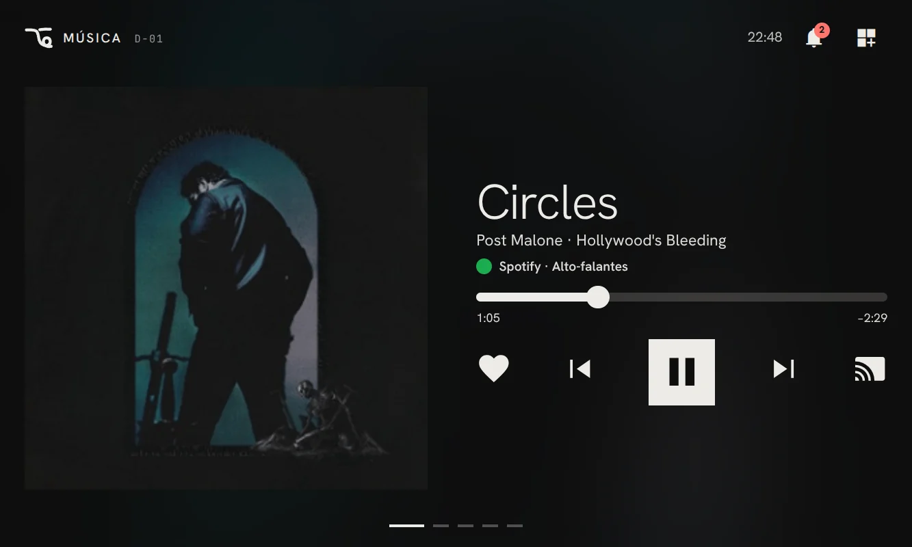
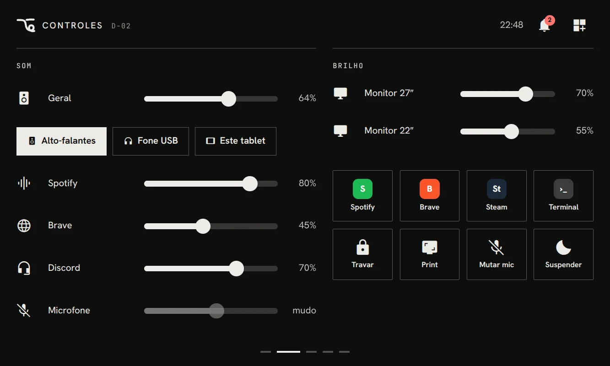
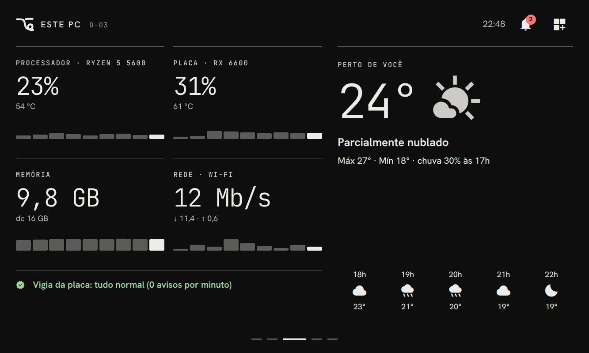
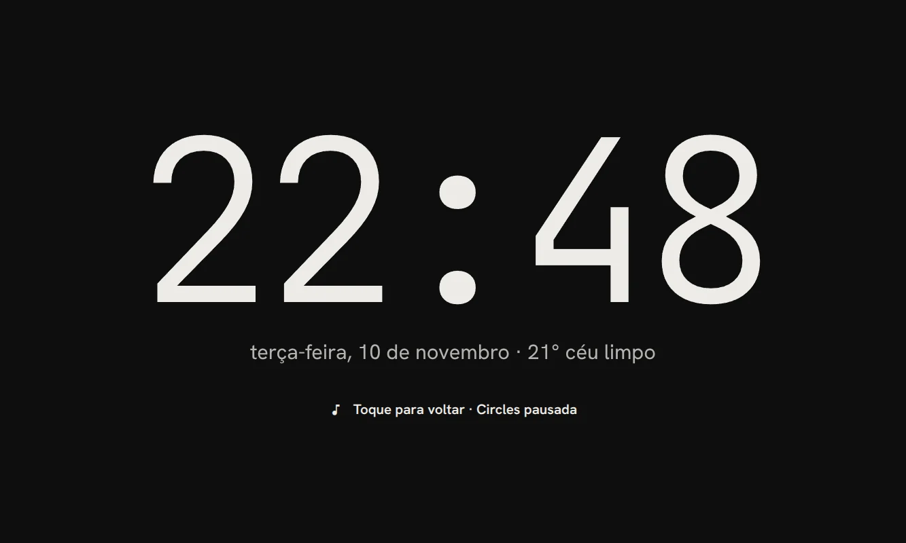
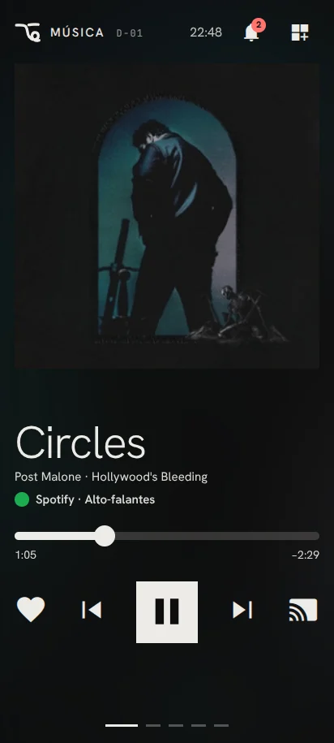

Nueva pantalla
Un monitor extra de verdad, con la resolución del dispositivo: a la derecha, a la izquierda, arriba o abajo de cualquier monitor. Arrastra una ventana y se abre maximizada.
lado: derecha · alinear: centroTu celular o tableta Android se vuelve segundo monitor, espejo del PC, pantalla de juego y, nuevo en la 0.2.0, un panel de escritorio con tu música, el volumen y el estado del PC. Se vincula con un código QR.
Un monitor más, a cualquier lado de cualquier monitor.
Cualquier monitor del PC, tal cual, en tu mano.
Los juegos del PC en el sofá, con o sin control.
Con 4G, 5G o cualquier Wi-Fi, a través de Tailscale.
Panel de escritorio del PC, sin stream. Música, controles, estado.
Eliges en cada conexión. El PC transmite con Sunshine; el celular o la tableta lo muestra con la app de OpenAlt.
Un monitor extra de verdad, con la resolución del dispositivo: a la derecha, a la izquierda, arriba o abajo de cualquier monitor. Arrastra una ventana y se abre maximizada.
lado: derecha · alinear: centroMuestra la pantalla principal, o cualquier otra, tal cual, en el celular o la tableta en tu mano. El sonido va al dispositivo.
duplicar: cualquier monitorLos juegos del PC en el sofá o en la cama, transmitidos por Sunshine. Conecta un control, si quieres.
hasta los Hz de tu pantallaDeja el PC en casa y llévate su pantalla, con 4G, 5G o cualquier Wi-Fi, con Tailscale y tu propia cuenta. Sin abrir puertos.
cifrado · tu cuentaSin stream y sin cargar la tarjeta gráfica: el PC manda solo los datos, por la red de casa, a los dispositivos que vinculaste. Elige “Dock” en la app del PC y toca tu PC en el celular.

Portada, letra sincronizada y controles grandes. Spotify, YouTube en el navegador, VLC. Sin letra, la portada ocupa la pantalla.
Volumen hasta 150%, salida y entrada de sonido, apps sonando, atajos y un cajón con las apps del PC y favoritos.
Uso y temperatura del procesador y de la tarjeta gráfica, memoria, red y el clima donde estás.
Cuando nada suena, la hora en grande. Empieza la música y el reproductor vuelve solo.
Oculta y reordena las páginas. Esquinas rectas o redondeadas, tú eliges.




Funciona solo en casa, en la red local. Pantallas en portugués.
OpenAlt prepara Sunshine con una configuración propia. La tuya queda intacta. Linux hoy, Windows después.
Nada se ejecuta hasta que pulses el botón. Lo pulsas de nuevo y todo vuelve a como estaba.
Abre la app de OpenAlt en el celular y apunta al código. Vale una vez y vence en dos minutos. Sin PIN.
A la derecha, a la izquierda, arriba o abajo de cualquier monitor tuyo. Celular o tableta, de pie o acostada. OpenAlt no supone nada de tu PC.
GPL-3.0. Sin anuncios, sin cuenta, sin rastreo. Lee cada línea del código.
Código fuente ↗Código de vinculación de un solo uso, que vence en dos minutos.
que abrir en el router. Fuera de casa pasa por Tailscale, con tu propia cuenta.
Transmisión con Sunshine (LizardByte) y el protocolo de Moonlight. La app Android es un fork de Moonlight Android.
Moonlight Android ↗Disponible ahora, GNOME en X11. Windows es el siguiente; después, Wayland.
Cualquier celular o tableta con Android 5 o más nuevo. La app escanea el QR y se conecta sola.
OpenAlt es una app libre y de código abierto que convierte un celular o tableta Android en segundo monitor, espejo de un PC Linux, pantalla de juego o panel de escritorio, el Dock. La instalas en el PC y en el dispositivo y los vinculas escaneando un código QR.
Sí. OpenAlt usa la licencia GPL-3.0, sin anuncios, sin cuenta y sin suscripción. Las descargas y el código fuente de cada versión están en GitHub.
Hoy, en PC Linux con GNOME en X11: un AppImage para cualquier distribución y un .deb para Ubuntu, Debian, Zorin y Pop!_OS. Windows viene después; luego, Wayland.
Cualquier celular o tableta con Android 5 o más nuevo, de pie o acostada, a cualquier lado de cualquier monitor.
El Dock, nuevo en la versión 0.2.0, convierte el celular o la tableta en un panel de escritorio junto al monitor: música con portada y letra sincronizada, volumen hasta 150% y salidas de sonido, atajos y las apps del PC, temperatura del procesador y de la tarjeta gráfica, el clima y un reloj grande cuando nada suena.
No. El PC manda solo los datos (la canción, el volumen, las temperaturas) por la red de casa, así que no carga la tarjeta gráfica. Funciona solo en la red local y solo con los dispositivos que vinculaste.
Sí, para duplicar el PC con 4G, 5G o cualquier Wi-Fi, con tu propia cuenta de Tailscale, sin abrir puertos en el router. El Dock funciona solo en casa.
La vinculación usa un código QR de un solo uso que vence en dos minutos, sin PIN. El PC solo acepta los dispositivos que vinculaste, y olvidar un dispositivo corta el stream y el Dock a la vez. Nada sobre ti se envía a ningún lado.
Instala en el PC, baja la app en el celular, escanea una vez. Cualquier persona transmitiendo desde cualquier lugar.
Windows · pronto · v0.2.0 · SHA256SUMS